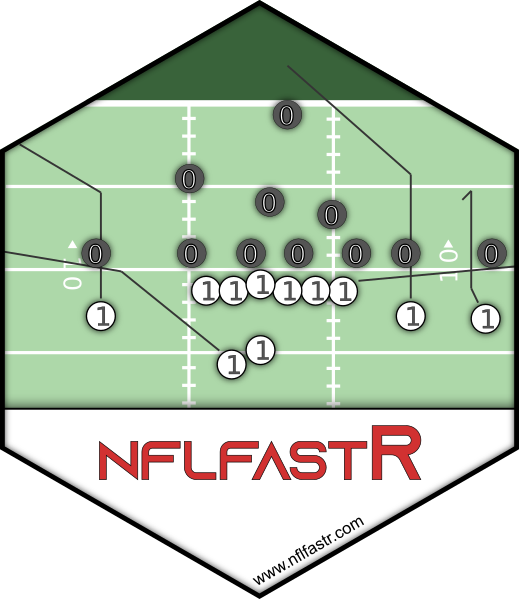

Compute Series Conversion Information from Play by Play
Source:R/calculate_series_conversion_rates.R
calculate_series_conversion_rates.RdA "Series" begins on a 1st and 10 and each team attempts to either earn a new 1st down (on offense) or prevent the offense from converting a new 1st down (on defense). Series conversion rate represents how many series have been either converted to a new 1st down or ended in a touchdown. This function computes series conversion rates on offense and defense from nflverse play-by-play data along with other series results. The function automatically removes series that ended in a QB kneel down.
Arguments
- pbp
Play-by-play data as returned by
load_pbp(),build_nflfastR_pbp(), orfast_scraper().- weekly
If
TRUE, returns week-by-week stats, otherwise, season-by-season stats in argumentpbp.
Value
A data frame of series information including the following columns:
- season
The NFL season
- team
NFL team abbreviation
- week
Week if
weeklyisTRUE- off_n
The number of series the offense played (excludes QB kneel downs, kickoffs, extra point/two point conversion attempts, non-plays, and plays that do not list a "posteam")
- off_scr
The rate at which a series ended in either new 1st down or touchdown while the offense was on the field
- off_scr_1st
The rate at which an offense earned a 1st down or scored a touchdown on 1st down
- off_scr_2nd
The rate at which an offense earned a 1st down or scored a touchdown on 2nd down
- off_scr_3rd
The rate at which an offense earned a 1st down or scored a touchdown on 3rd down
- off_scr_4th
The rate at which an offense earned a 1st down or scored a touchdown on 4th down
- off_1st
The rate of series that ended in a new 1st down while the offense was on the field (does not include offensive touchdown)
- off_td
The rate of series that ended in an offensive touchdown while the offense was on the field
- off_fg
The rate of series that ended in a field goal attempt while the offense was on the field
- off_punt
The rate of series that ended in a punt while the offense was on the field
- off_to
The rate of series that ended in a turnover (including on downs), in an opponent score, or at the end of half (or game) while the offense was on the field
- def_n
The number of series the defense played (excludes QB kneel downs, kickoffs, extra point/two point conversion attempts, non-plays, and plays that do not list a "posteam")
- def_scr
The rate at which a series ended in either new 1st down or touchdown while the defense was on the field
- def_scr_1st
The rate at which a defense allowed a 1st down or touchdown on 1st down
- def_scr_2nd
The rate at which a defense allowed a 1st down or touchdown on 2nd down
- def_scr_3rd
The rate at which a defense allowed a 1st down or touchdown on 3rd down
- def_scr_4th
The rate at which a defense allowed a 1st down or touchdown on 4th down
- def_1st
The rate of series that ended in a new 1st down while the defense was on the field (does not include offensive touchdown)
- def_td
The rate of series that ended in an offensive touchdown while the defense was on the field
- def_fg
The rate of series that ended in a field goal attempt while the defense was on the field
- def_punt
The rate of series that ended in a punt while the defense was on the field
- def_to
The rate of series that ended in a turnover (including on downs), in an opponent score, or at the end of half (or game) while the defense was on the field
Examples
# \donttest{
try({# to avoid CRAN test problems
pbp <- nflfastR::load_pbp(2021)
weekly <- calculate_series_conversion_rates(pbp, weekly = TRUE)
str(
weekly,
list.len = ncol(weekly),
vec.len = 10,
give.attr = FALSE,
strict.width = "cut"
)
overall <- calculate_series_conversion_rates(pbp, weekly = FALSE)
str(
overall,
list.len = ncol(overall),
vec.len = 10,
give.attr = FALSE,
strict.width = "cut"
)
})
#> tibble [570 × 25] (S3: tbl_df/tbl/data.frame)
#> $ season : int [1:570] 2021 2021 2021 2021 2021 2021 2021 2021 2021 2021 ..
#> $ team : chr [1:570] "ARI" "ARI" "ARI" "ARI" "ARI" "ARI" "ARI" "ARI" ""..
#> $ week : int [1:570] 1 2 3 4 5 6 7 8 9 10 11 13 14 15 16 17 18 19 1 2 3..
#> $ off_n : int [1:570] 28 29 31 32 27 29 31 27 28 21 36 20 31 31 27 30 28..
#> $ off_scr : num [1:570] 0.786 0.724 0.742 0.844 0.741 0.828 0.774 0.815 0...
#> $ off_scr_1st: num [1:570] 0.1429 0.2414 0.1935 0.125 0.1852 0.1379 0.1935 0...
#> $ off_scr_2nd: num [1:570] 0.357 0.345 0.452 0.438 0.444 0.345 0.323 0.296 0...
#> $ off_scr_3rd: num [1:570] 0.2857 0.1034 0.0323 0.2812 0.1111 0.3103 0.2258 0..
#> $ off_scr_4th: num [1:570] 0 0.0345 0.0645 0 0 0.0345 0.0323 0.0741 0.0357 0 ..
#> $ off_1st : num [1:570] 0.607 0.586 0.645 0.719 0.667 0.69 0.645 0.704 0.6..
#> $ off_td : num [1:570] 0.1786 0.1379 0.0968 0.125 0.0741 0.1379 0.129 0.1..
#> $ off_fg : num [1:570] 0.0714 0.069 0.0323 0.0938 0.0741 0.1034 0.0323 0 ..
#> $ off_punt : num [1:570] 0.1071 0.1379 0.1613 0.0625 0.1481 0.069 0.129 0.1..
#> $ off_to : num [1:570] 0.0357 0.069 0.0645 0 0.037 0 0.0645 0.0741 0.0357..
#> $ def_n : int [1:570] 26 30 30 31 25 23 19 30 30 33 24 32 24 27 27 25 24..
#> $ def_scr : num [1:570] 0.654 0.733 0.667 0.774 0.68 0.652 0.421 0.8 0.7 0..
#> $ def_scr_1st: num [1:570] 0.192 0.267 0.2 0.258 0.24 0.217 0.105 0.233 0.367..
#> $ def_scr_2nd: num [1:570] 0.231 0.367 0.367 0.323 0.28 0.261 0.158 0.267 0.1..
#> $ def_scr_3rd: num [1:570] 0.1923 0.0667 0.0667 0.1935 0.12 0.1304 0.1579 0.2..
#> $ def_scr_4th: num [1:570] 0.0385 0.0333 0.0333 0 0.04 0.0435 0 0.0667 0 0 0 ..
#> $ def_1st : num [1:570] 0.577 0.633 0.6 0.71 0.64 0.565 0.421 0.7 0.633 0...
#> $ def_td : num [1:570] 0.0769 0.1 0.0667 0.0645 0.04 0.087 0 0.1 0.0667 0..
#> $ def_fg : num [1:570] 0.0385 0.1 0 0.0968 0.04 0 0.0526 0.0333 0.0333 0...
#> $ def_punt : num [1:570] 0.1154 0.1667 0.2 0.0323 0.08 0.087 0.3684 0.1 0.1..
#> $ def_to : num [1:570] 0.1923 0 0.1333 0.0968 0.2 0.2609 0.1579 0.0667 0...
#> tibble [32 × 24] (S3: tbl_df/tbl/data.frame)
#> $ season : int [1:32] 2021 2021 2021 2021 2021 2021 2021 2021 2021 2021 2..
#> $ team : chr [1:32] "ARI" "ATL" "BAL" "BUF" "CAR" "CHI" "CIN" "CLE" "D"..
#> $ off_n : int [1:32] 510 441 538 568 474 472 569 463 540 449 463 504 415..
#> $ off_scr : num [1:32] 0.743 0.683 0.727 0.783 0.667 0.699 0.714 0.724 0.7..
#> $ off_scr_1st: num [1:32] 0.184 0.204 0.242 0.261 0.203 0.222 0.207 0.227 0.2..
#> $ off_scr_2nd: num [1:32] 0.304 0.238 0.292 0.28 0.247 0.263 0.274 0.272 0.28..
#> $ off_scr_3rd: num [1:32] 0.218 0.211 0.156 0.215 0.186 0.174 0.204 0.192 0.2..
#> $ off_scr_4th: num [1:32] 0.0373 0.0295 0.0372 0.0282 0.0316 0.0403 0.0281 0...
#> $ off_1st : num [1:32] 0.643 0.612 0.652 0.664 0.601 0.633 0.61 0.635 0.64..
#> $ off_td : num [1:32] 0.1 0.0703 0.0743 0.1197 0.0654 0.0657 0.1037 0.088..
#> $ off_fg : num [1:32] 0.0725 0.0658 0.0688 0.0563 0.0612 0.0636 0.0844 0...
#> $ off_punt : num [1:32] 0.1118 0.1451 0.132 0.0986 0.1561 0.1292 0.1441 0.1..
#> $ off_to : num [1:32] 0.0725 0.1066 0.0725 0.0616 0.116 0.1081 0.058 0.08..
#> $ def_n : int [1:32] 483 490 477 489 451 439 592 451 509 434 485 478 503..
#> $ def_scr : num [1:32] 0.714 0.773 0.713 0.675 0.685 0.718 0.703 0.716 0.6..
#> $ def_scr_1st: num [1:32] 0.238 0.218 0.264 0.188 0.228 0.241 0.226 0.186 0.2..
#> $ def_scr_2nd: num [1:32] 0.253 0.298 0.26 0.243 0.237 0.232 0.252 0.275 0.20..
#> $ def_scr_3rd: num [1:32] 0.19 0.231 0.164 0.196 0.193 0.214 0.208 0.213 0.19..
#> $ def_scr_4th: num [1:32] 0.0331 0.0265 0.0252 0.047 0.0266 0.0296 0.0169 0.0..
#> $ def_1st : num [1:32] 0.625 0.671 0.621 0.597 0.592 0.615 0.618 0.623 0.5..
#> $ def_td : num [1:32] 0.089 0.102 0.0922 0.0777 0.0931 0.1025 0.0845 0.09..
#> $ def_fg : num [1:32] 0.0621 0.0571 0.0587 0.0573 0.082 0.0683 0.0642 0.0..
#> $ def_punt : num [1:32] 0.1304 0.1082 0.174 0.1616 0.1641 0.1412 0.152 0.15..
#> $ def_to : num [1:32] 0.0932 0.0612 0.0545 0.1063 0.0687 0.0729 0.0811 0...
# }